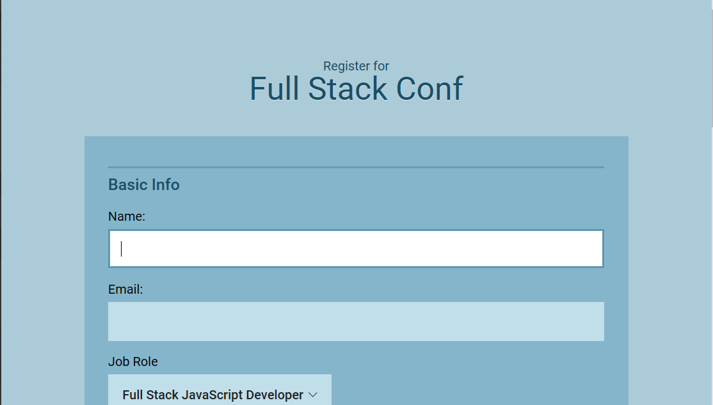
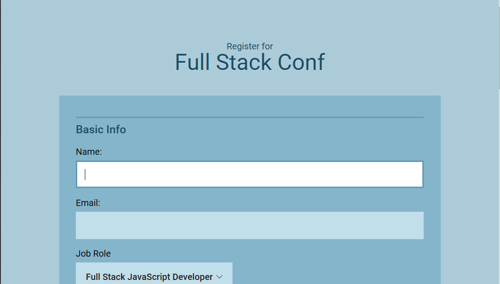
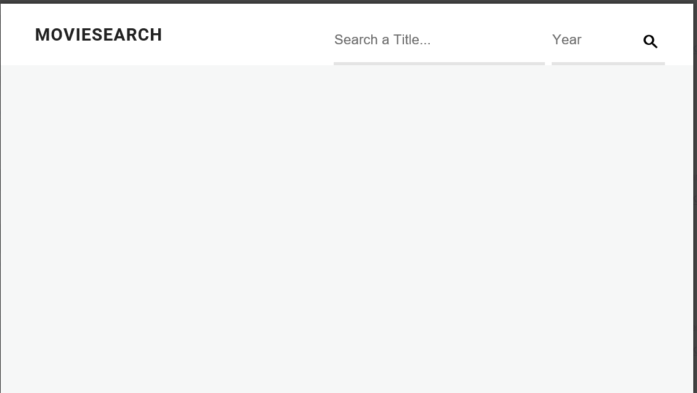
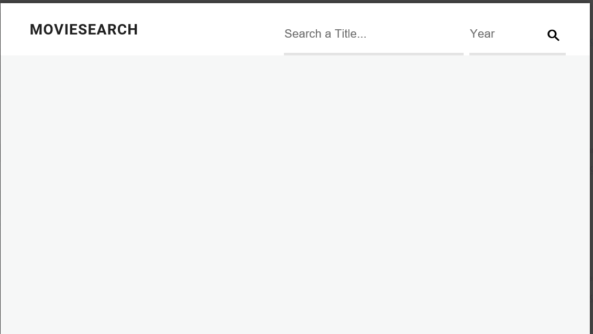
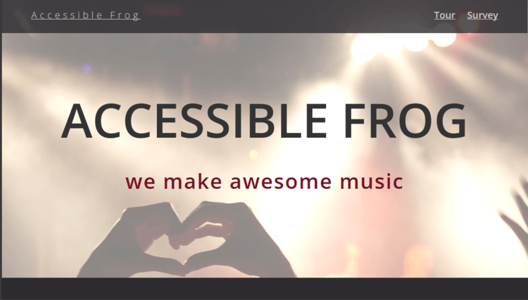
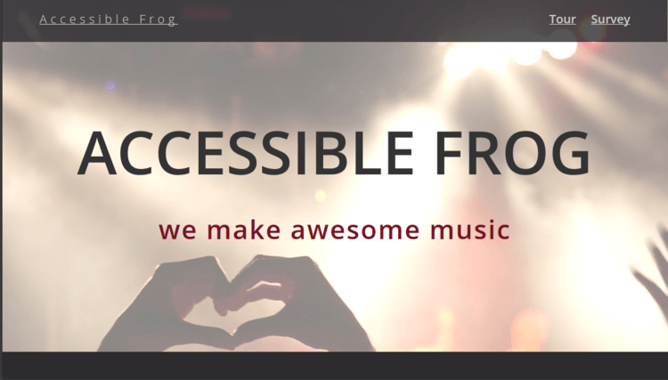

Follow your passion, be prepared to work hard and sacrifice, and, above all, don't let anyone limit your dreams.
- Donovan Bailey
Hi!. My name is Steve Masteller. I’m an aspiring web developer who loves everything about the web. I'm a life-long learner who's always interested in expanding my skills, and now I am excited to bring my life experience to the process of building fantastic looking websites.
While relatively new to web development and javascript, I have over 20 years experience as a professional programmer. I believe this experience is reflected in the quality of my code.
Select a skill.
Raw code may be found at https://github.com/stevemasteller?tab=repositories
 Portfolio Update
Portfolio Update
 Random Quote
Responsive Layout
Random Quote
Responsive Layout
 Pagination Filter
Online Registration
Interactive Form
Photo Gallery
Pagination Filter
Online Registration
Interactive Form
Photo Gallery
 Tic Tac Toe
Tic Tac Toe
 CSS to SASS
Movie Search
CSS to SASS
Movie Search
 SVG Update
Content Scraper
SVG Update
Content Scraper
{kind=link}
 Video Player
Twitter Interface
Accessibility Refactor
Gulp
Video Player
Twitter Interface
Accessibility Refactor
Gulp
{kind=link}
{kind=link}
 Dashboard
Dashboard
 Single Page Recipe App
Single Page Recipe App
 Library Manager
Library Manager
 Rest API
Rest API